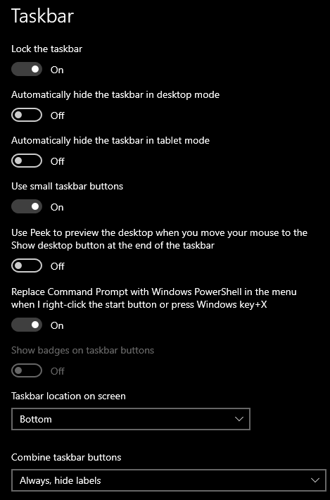
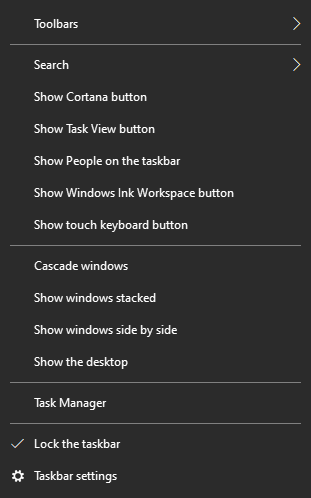
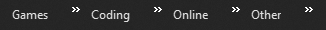
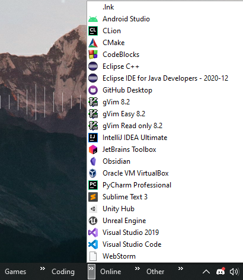
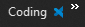
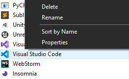

How to get a simple desktop
This guide will tell you how to get a simple desktop.
No program installation needed
Preview
.png)
Setting up the taskbar
Taskbar settings
Right click on your taskbar, and select Taskbar Settings.

Taskbar settings
- Lock the taskbar - Toggled
- Use small taskbar buttons - Toggled
- Combine taskbar buttons - Always, hide labels
Your taskbar should start to look a bit better than it before! It should be smaller than when you first started out (unless you already had these settings).
Other taskbar settings
Right click on the task bar and make sure everything is deselect the following items:

Selected show settings for taskbar
- Show Cortana Button
- Show Task View Button
- Show People on the Taskbar
- Show Windows Ink Workspace button
- Show touch keyboard button
- Optional: Go to Search and select Hidden/Show search icon based on your preference
Your taskbar should start to be looking small and should be starting to look small!
Setting up toolbars Optional
This will get all of the icons on your desktop in a small dropdown
on the taskbar.
This part is going to be one of the more
complex parts, so it's fine to skip it.
Output of getting toolbars


Setting up folders
Sorting shortcuts
Start off by making folders on your desktop, each for different categories. Then drag and drop all the shortcuts for the corresponding category into the desired folders.
Fixing icon issue (optional if you don't have a ton of shortcuts)
Once you've done it for that for all the icons on your Desktop, we're going to start making an empty icon, otherwise you'll see the icons coming up in the toolbar like so:

To fix this, we're going to make an "invisible" shortcut.
Open the folder in which your shortcuts are located, then right
click and hover over
New then select Shortcut.
Put the location of
the folder in which you're storing all of your shortcuts.
Just leave the name of the shortcut as a space. If you make a
mistake, you can rename the shortcut by right clicking on it and
naming it this the space in this: " ".
We're almost there!
For the image of the shortcut, we're going to use a transparent
icon. Here's the download link to the .ico (icon file).
Download icon file
Now store this file somewhere where it isn't going to be deleted.
Right click on the icon we made with no name, and select
Change icon. Then click Browse and locate and select
the icon file you just downloaded.
Repeat this for all the folders you have! (Don't download the icon again, just reselect the icon file when setting a custom icon for the no named shortcut)
Adding the toolbars
We're almost done!
Right click on your task bar and hover over Toolbar and click
New toolbar.
Now locate your folder (do it one by one for all the folders you
have) where you kept your shortcuts.
And now you can see your toolbar! Just make sure that your taskbar
is unlocked by right clicking on the taskbar and unselecting
Lock the Taskbar (we'll unlock it later).
Now this is the final part for this section!
Open up your toolbar and drag your empty shortcut all the way up!
Readjust the 2 bars in such a way that there isn't any space between
the separate toolbars.
Do this for all the folders/categories you have!
Now you're done! Your toolbar should look like the preview image at the start of this section!
If the "invisible" shortcut is in the folder but it still looks like this, then open up the toolbar by clicking on the arrows, right click, then select "Sort by Name".

Setting up the background
This part is simple. Right click on the Desktop and hover over View and select Show desktop icons (if you wish not to hide the icons, you can change the size of the icons instead)
Feel free to change the wall paper to what ever you wish.
Animated Wallpaper Optional Installation Required
You can get animated wall papers using a program called
Wallpaper Engine
($3.99 not including taxes) or if you don't want to spend money, you
can get an alternative called
Lively which
is free and open source (open source code here on GitHub).
Any wall paper will work, but if you're using Wallpaper Engine and
want the same wall paper I'm using,
here's the Steam Community Workshop link.